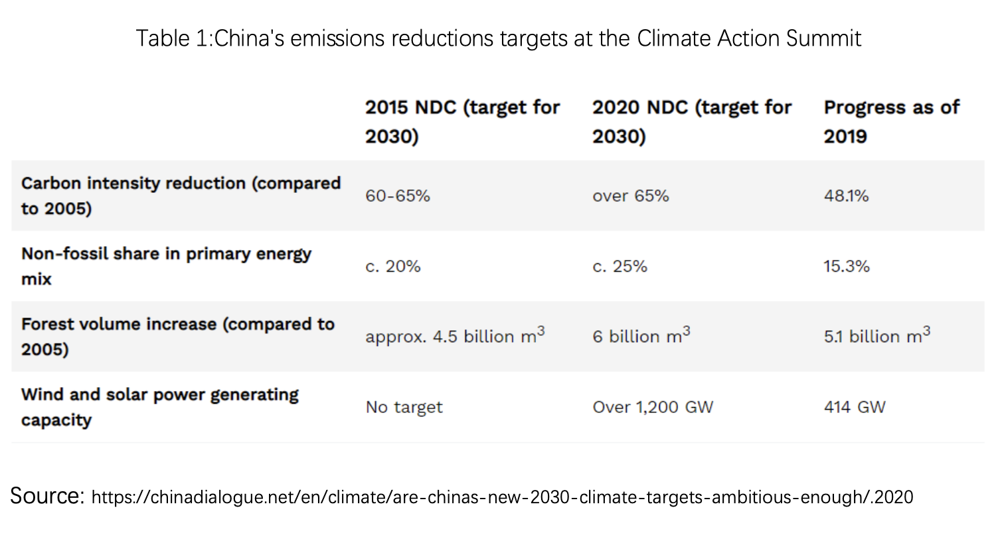
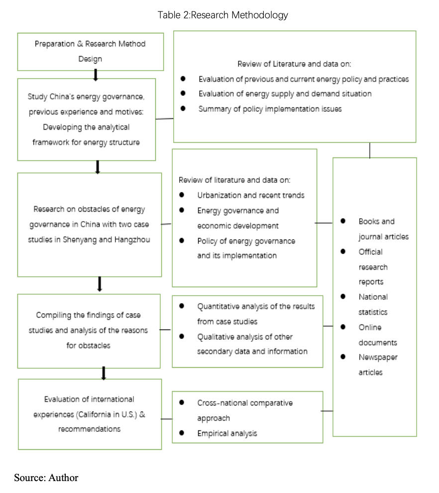

In order to deal with the impacts of climate change, the world has begun to actively shift toward clean methods of energy consumption. China is also actively promoting this energy revolution. Although the central government has repeatedly stressed the importance of energy policy, it has so far had less than the desired effect. The purpose of this paper is to find out the obstacles within China's local energy governance and put forward feasible suggestions for China's energy governance.
In this paper, Hangzhou and Shenyang, two representative cities of North and South China, respectively, are selected for case studies. Through quantitative analysis, this paper calculates the per capita carbon emission, urbanization status, the relationship between economic development and energy consumption of Hangzhou, which is in the first batch of green low-carbon pilot cities, and Shenyang, which is in the third batch of green low-carbon cities. Through qualitative analysis, this paper finds that local protectionism, the promotion mechanism for local officials and the lack of motivation for energy reform in state-owned enterprises are the three major obstacles to good energy governance. In view of these obstacles of energy governance, the corresponding suggestions are put forward.
First, by analyzing the successful experience of energy governance in California and London, this paper concludes that China can learn from California's energy governance experience by increasing the proportion of clean energy in the local energy consumption structure by carrying out a structural transformation and getting rid of the coal-based energy consumption structure. These goals can be reached by actively promoting the reform of state-owned enterprises to reduce local protectionism through increased market reforms used to guide energy prices, supply and demand, making energy information transparent, and increasing the scope of public participation and supervision. Furthermore, placing environmental governance (through a renewable energy percentage) as the most important indicator of official performance evaluation can improve public environmental supervision and the evaluation system. Finally, due to the continuous improvement of China's urbanization rate, consistent building and industry energy efficiency standards should be codified.
Through this study, this paper also found that legal system issues may be an important reason for local protectionism, but this subject is a bit outside the purview of this paper. However, it’s worth noting that improvement of the legal system may help to improve the status of local energy governance.
In the 1950s, China seldom considered the environment when making development plans and policies. Mao Zedong in fact proposed that he hoped to see chimneys everywhere in Chinese cities because China needed to improve employment opportunities and income levels. In the 1980s, Deng Xiaoping began to implement the policy of reform and opening up in order to accelerate economic development. Through the development the processing and manufacturing industries for export to western countries, China's economy has developed rapidly in the past 40 years. Until the beginning of the 21st century, China's central government has used economic development (emphasizing GDP growth) as the main criterion for assessing local officials’ performance, and as a result, it did not prioritize environmental protection. Under this system, local officials do not consider environmental protection and energy consumption when promoting economic development because it does not help their political careers. On the other hand, officials who focus on fixed asset investments and infrastructure development are more likely to be promoted (Wu, et al., 2013).
At the beginning of the 21st century, the central government’s policy began to change, and the indicators for environmental performance and energy efficiency were clearly included in the performance evaluation system of local officials. The central government began to put more emphasis on "scientific development” (Chow, 2010). In 2006, starting from the 11th "Five Year Plan", Beijing upgraded several environmental objectives from "encouraged" to "mandatory". Since then, the mandatory environmental objectives have been written into the annual responsibility contract of local leading cadres, and they have become an important standard of cadre promotion during decision-making evaluations (Heberer & Anja, 2011). Its purpose is to encourage government officials at all levels to fulfill the requirements of the central government’s policy for environmental protection (Ran, 2013). At the 2009 Copenhagen Climate Summit, China promised to reduce its carbon intensity by 40% - 50% by 2020 (Natural Resources Defense Council, 2014). This goal is defined as the proportion of carbon dioxide emission reduced per yuan of economic output. Therefore, even if the total carbon dioxide emissions increase (due to GDP increases), this proportion can still be reduced, and the resulting goal can still be met. At the 2015 Paris climate conference, China submitted its first Nationally Determined Contribution proposal to the United Nations. Then, in February 2020, Xi Jinping put forward more ambitious emissions reductions targets at the Climate Action Summit (Shiyi, 2020) as shown in Table 1.
Why has the Chinese government changed its policy approach so much to orient itself toward environmental protection? One explanation is that the Communist Party of China hopes to enhance its political prestige on the international stage and in the eyes of the Chinese people through an emphasis on environmental protection. The commitment to protect the environment can send an important signal to the people as well as to the international community that China is a leader on the international stage, and that the Communist Party of China is acutely concerned about the health of its own people (Wang, 2013). If China continues to be regarded as one of the countries with an unhealthy environment in the world, it will be difficult for it to realize its vision of becoming a globally recognized world power. Another explanation is that the Chinese government believes that all countries in the world will eventually embark on the road of low-carbon development, so China hopes to be a "leader" in this emerging field by leading the development of clean technology and its integration into the economy. Environmental governance can kill two birds with one stone for the government: it can improve people's quality of life and enhance people's support for the government, which would certainly reduce the risk of social instability, a big concern for the government.
Whatever the explanation for its pivot toward the environment, the rules and system design the central government implement for environmental governance are crucial to determine whether healthy energy governance can be promoted. Therefore, the promotion rules for local officials, their own environmental governance capabilities, as well as their abilities to legislate and enforce the law in this area, play a core role in the effectiveness of energy governance. There are many different functional departments under the central government, all of which have different priorities in handling affairs. For example, the National Development and Reform Commission (NDRC) shoulders a variety of management functions. Its main function is to promote national economic development, but it also has responsibility to promote the development of an ecological civilization, including core principles like energy conservation and comprehensive and effective utilization of available resources. NDRC officials have more power than officials of the National Energy Administration (NEA) because the policies design and implemented by the National Energy Administration must be examined and approved by the NDRC (NDRC, 2019). These power differentials between government agencies and officials ultimately determine whether the rules and regulations of energy governance can be implemented and receive the supervision required to achieve successful results. If the institutions supporting economic growth can interfere in energy governance, the possibility of making significant progress in energy governance will be reduced.
Unsurprisingly, China has a strong central government. However, under the central government exist hundreds of competing local governments. Unlike in the West, where elections to a large extent determine who can serve as a local government official, the appointment or promotion of local leaders in China is decided by the Organization Department of the Party. The central government directly appoints mayors of provincial and key cities.
In the past, the growth rate of GDP was one of the main indicators that the central government considered when evaluating whether the lower officials should get promoted. Since the 11th Five-Year Plan, however, the central government has added environmental governance indicators such as energy conservation and emissions reductions into the evaluation system for local officials (Qi, et al.,2008 Alex, 201). As a result, city leaders will now have to focus more on environmental governance (Kostka, 2014). In the past, Chinese mayors mostly focused on GDP growth, per capita income growth, and ensuring social instability would never occur. Since the 11th Five-Year Plan was released, the central government has introduced additional assessment indicators, including reducing the intensity of urban energy consumption and controlling air pollution. The assessment standards related to environmental protection account for about 20% of the evaluation standards (Landry & Pierre, 2008). There is already a significant positive correlation between the promotion of city officials and economic growth in a given city. Assuming these same conditions, if the energy consumption intensity of the city decreases significantly and the air quality improves, then the possibility of promotion for city officials will increase even more (Zheng, 2013).
China is the world’s fastest-growing economy, and because it consumes coal intensively every year, emitting huge amounts of greenhouse gasses to the air, it has already become a crucial player to the international system in terms of addressing the issues of climate change and energy security. As expected, and out of necessity, the world’s energy consumption mix is turning to low-carbon and renewable energy generation resources. Therefore, given China’s large presence in the international sphere, its energy governance is profoundly important and critical to protecting and maintaining its international image, fulfilling its responsibilities, and ensuring it has a future path to sustainable development.
China’s energy governance currently faces not only technical and cost problems, but also the need for reform in its system of energy governance. In 2013, Xi Jinping put forth China's new energy policy, "four revolutions, one cooperation", which included revolutions in energy supply, energy consumption, energy technology and the energy system as well as international energy cooperation (State Council of China, 2020).
Thus, this thesis paper will focus on the local energy governance within China in an attempt to better understand and address the intertwined environmental and economic problems and analyze the contradictions created by its budding energy governance. On the one hand, China has implemented many policy measures (especially on the national level) in accordance with its own domestic energy governance targets. However, on the other hand, China has had to alter the trajectory of its economic policy measures because of local governments’ prioritization of developing the economy over correctly implementing energy policy reform measures. As such, there are many obstacles to China's quest to reduce intensive energy consumption and transform its energy mix. Both the motives and strength the central government have to reform energy policy as well as how local governments respond to said policy changes are crucial to success and to achieving the emissions reduction targets from China’s NDC.
Addressing both the environmental/pollution issues and climate change implications represent the most important parts of energy policy because these pollutants and greenhouse gasses represent the negative effects of energy usage. Framing it this way, the energy policy issued to respond to pollution and climate issues in China have been shaped by pressures at two levels. At the domestic level, China has had to sustain its speed of economic growth and transform its energy system to a low-carbon emitting one steadily by deducting and retiring the number of its coal-fired plants to move toward a cleaner energy consumption mix. At the international level, China has made its promise to address the climate change issue and abide by the Paris Agreement, which will enhance its positive international image and increase positive discourse.
This Chapter of the paper will include a research aim and objectives, methodology and thesis structure, literature review and an overview of China’s energy governance.
The purpose of this paper is to establish an analytical framework for all of the obstacles to implementation of central policies by local governments based on research on the current situation of China's local energy governance. Furthermore, this paper will pull from the experience of international energy governance and trace the source of the problems at the local energy governance level in order to help the Chinese government improve its policies and realize its Paris Agreement commitments. Then this paper will analyze the implementation of existing energy governance policies and take Shenyang and Hangzhou, two provincial capital cities in the north and south of China, as case studies to summarize the obstacles of the central energy governance policy. Shenyang and Hangzhou are rather representative of cities in northern and southern China, respectively. Shenyang is the capital city of a northeastern province which serves as an old industrial base, and Hangzhou represents the rapid e-commerce economic development and vigorous vitality of the Yangtze River Delta. These two cities can be the starting points at the local government level in order to gather some insights on how to transform the energy mix of the cities in Southern and Northern China as well as solving the problem surrounding energy shortage, unreasonable energy consumption structures and low energy efficiency.
Based on the main results of this research, I will make some suggestions to improve the outcomes of local energy governance in China. These conclusions and suggestions will also provide valuable reference points for policy makers to specify energy policies in the future.
To achieve the above aim, this research has the following specific objectives:
This paper will employ qualitative research methods and will involve the collection of primary and secondary data and information from both China and the United States, as well as a literature review, empirical analysis, and case study. The specific steps are as follows (Table 2):
